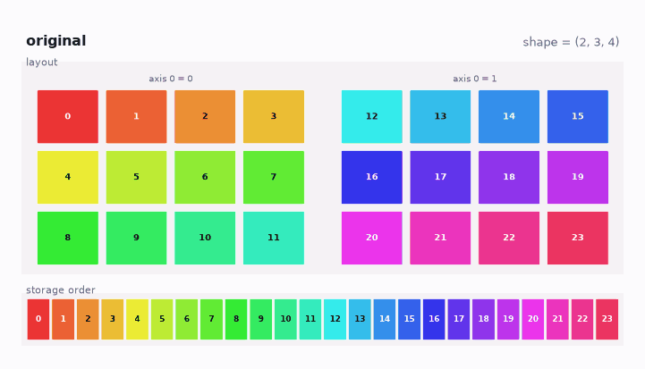
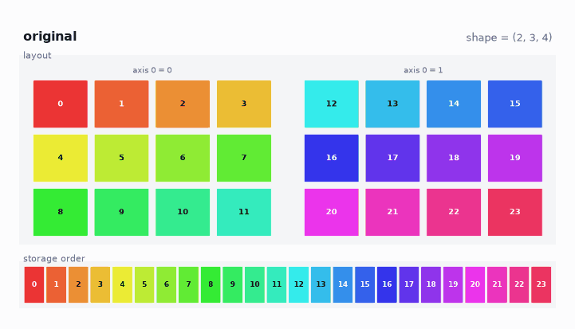

Nested Python lists already hold a grid. They do not carry a shape we can reshape. A tiny class that stores a flat list and a shape tuple gives NumPy’s layout methods with no NumPy.
We already write nested lists and call len for the first axis. The other axes are nested loops. NumPy’s .shape is that layout made explicit. shape, ndim, and size are attributes, not calls.
1 Storage
This post uses a synthetic \(2\times 3\times 4\) array of range(24).
Provenance:
- The 24 integers are generated, not measured.
- The array stands in for a small 3-way table (batch × row × column).
- Size 24 was chosen so each entry can keep one colour in the figures.
- A measured table of that shape is larger; the layout questions are the same.
The constructor flattens nested lists and records a shape. It rejects a shape whose product is not len(data).
from math import prod
def _flatten_shape(data):
if not isinstance(data, list):
return [data], ()
if not data:
return [], (0,)
parts = [_flatten_shape(item) for item in data]
shape = parts[0][1]
if any(s != shape for _, s in parts):
raise ValueError("ragged nested list")
flat = [v for f, _ in parts for v in f]
return flat, (len(data),) + shape
def _unravel(index, shape):
out = []
for size in reversed(shape):
out.append(index % size)
index //= size
return tuple(reversed(out))
def _ravel(multi, shape):
index = 0
for i, n in zip(multi, shape):
index = index * n + i
return index
class Tensor:
def __init__(self, data, shape=None):
if shape is None:
data, shape = _flatten_shape(data)
data = list(data)
shape = tuple(shape)
if prod(shape) != len(data):
raise ValueError("shape does not match size")
self._data = data
self._shape = shape2 Counts
Four numbers describe the same layout:
- shape — length of each axis:
(2, 3, 4). - ndim — how many axes:
3. - size — product of the shape:
24. - len — first axis only:
2, not24.
@property
def shape(self):
return self._shape
@property
def ndim(self):
return len(self._shape)
@property
def size(self):
return prod(self._shape)
def __len__(self):
return self._shape[0]3 Reshape
reshape returns a new Tensor with the same _data and a new shape. The product must equal .size. The list is copied; this is not a NumPy view.
def reshape(self, *shape):
if prod(shape) != self.size:
raise ValueError("size mismatch")
return Tensor(self._data, shape)Each colour is one entry. The strip is storage order.

reshape to a column, a row, and a \(4\times 3\times 2\). The storage strip stays 0 through 23.
The column, the row, and the \(4\times 3\times 2\) keep that order.
4 Transpose
Default transpose reverses axes. \((2, 3, 4)\) becomes \((4, 3, 2)\). Each multi-index is permuted and written into a new flat list.
def transpose(self, *axes):
if not axes:
axes = tuple(range(self.ndim - 1, -1, -1))
new_shape = tuple(self._shape[a] for a in axes)
out = [None] * self.size
for i, value in enumerate(self._data):
old = _unravel(i, self._shape)
new = tuple(old[a] for a in axes)
out[_ravel(new, new_shape)] = value
return Tensor(out, new_shape)
transpose. Layout is \(4\times 3\times 2\); the storage strip is no longer 0 through 23.
The \(4\times 3\times 2\) box matches the last reshape. The strip does not.
5 Constraints
No broadcasting, no slicing, no dtype, no views. Enough to see why NumPy treats shape as data. NumPy to JAX is the real API.
6 Class
Markdown fences do not join. reshape and transpose are ordinary methods on Tensor:
from math import prod
def _flatten_shape(data):
if not isinstance(data, list):
return [data], ()
if not data:
return [], (0,)
parts = [_flatten_shape(item) for item in data]
shape = parts[0][1]
if any(s != shape for _, s in parts):
raise ValueError("ragged nested list")
flat = [v for f, _ in parts for v in f]
return flat, (len(data),) + shape
def _unravel(index, shape):
out = []
for size in reversed(shape):
out.append(index % size)
index //= size
return tuple(reversed(out))
def _ravel(multi, shape):
index = 0
for i, n in zip(multi, shape):
index = index * n + i
return index
class Tensor:
def __init__(self, data, shape=None):
if shape is None:
data, shape = _flatten_shape(data)
data = list(data)
shape = tuple(shape)
if prod(shape) != len(data):
raise ValueError("shape does not match size")
self._data = data
self._shape = shape
@property
def shape(self):
return self._shape
@property
def ndim(self):
return len(self._shape)
@property
def size(self):
return prod(self._shape)
def __len__(self):
return self._shape[0]
def reshape(self, *shape):
if prod(shape) != self.size:
raise ValueError("size mismatch")
return Tensor(self._data, shape)
def transpose(self, *axes):
if not axes:
axes = tuple(range(self.ndim - 1, -1, -1))
new_shape = tuple(self._shape[a] for a in axes)
out = [None] * self.size
for i, value in enumerate(self._data):
old = _unravel(i, self._shape)
new = tuple(old[a] for a in axes)
out[_ravel(new, new_shape)] = value
return Tensor(out, new_shape)
t = Tensor(list(range(24)), (2, 3, 4))
assert t.shape == (2, 3, 4)
assert len(t) == 2
assert t.reshape(4, 3, 2)._data == t._data
assert t.transpose()._data != t._dataStorage. Order. Survives. Reshape. Transpose. Breaks. It. Shape. Is. Data.
7 References
- NumPy, The N-dimensional array (
ndarray). - NumPy to JAX — this blog;
shape,ndim,size, andreshapeon the real array type.